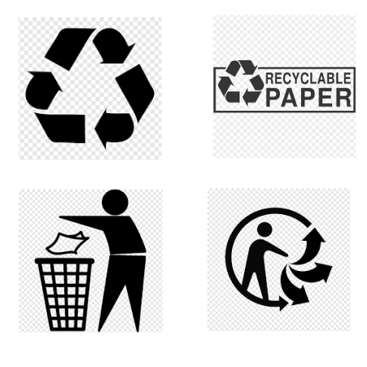

eco Xpress is a one stop site to find, learn and purchase appropriate eco-friendly packaging for your needs. We cater to individuals, small and large businesses. Our aim is to ensure that over-wrapping/packaging does not happen. This is to reduce the amount of waste that is produced due to the booming online shopping trend. We not only provide eco-friendly packaging for all sizes (you can even design custom ones!), we offer dedicated spots around your neighbourhood to safely recycle any packaging (it deosn't have to be from us). We also partner with the elderly called, "karang guni" who make their living by collecting recyclables.
To find the appropriate type and size of packaging you require, please key in the type of product and its size and we'll do the rest!
Look for the logos below to see if the used packaging you have is eligible for recycling at our many locations.
ADS
ADS